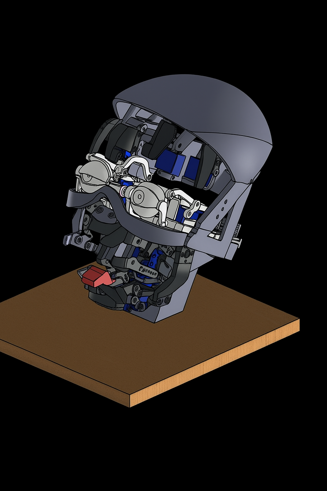
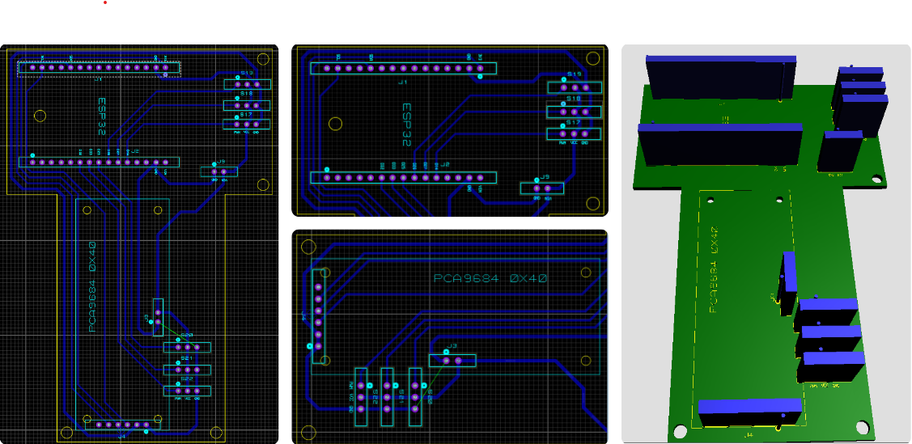

Enero 2024
Inicio del Diseño
Se definieron los requerimientos mecánicos y electrónicos para la cabeza robótica. Bocetos iniciales y prototipos rápidos.
Recorre los hitos principales de nuestro proyecto. Cada bloque tiene una imagen a la izquierda y texto descriptivo a la derecha —repetido 5 veces.

Se definieron los requerimientos mecánicos y electrónicos para la cabeza robótica. Bocetos iniciales y prototipos rápidos.

Se integraron microcontroladores (ESP32), drivers de motor y sensores para control de posición y detección.

Se implementó reconocimiento de gestos y emociones mediante cámaras y modelos ligeros de IA.

Se realizaron pruebas de movimiento, sincronización de expresiones y optimización del consumo energético.

Presentación pública del prototipo y apertura para pruebas de usuario. Recolección de feedback y planificación de la siguiente fase.